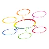
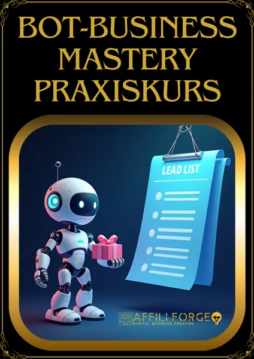
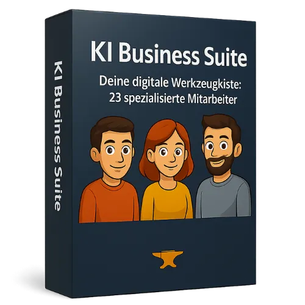

KT Connector / Kundendaten nach KlickTipp übertragen
Produktprofil · Marktplatz-Daten 2026-10-14 · Verkaufsseiten-Recherche 2026-10-14 · Kategorien: Email Marketing
- KT Connector / Kundendaten nach KlickTipp übertragen ist ein/e Elektronische Dienstleistung in Email Marketing, vertrieben über den Digistore24-Marktplatz von Anbieter rabatt, gelistet seit 2021-06-17.
- Listenpreis $134.26 (subscription) — Checkout, Auslieferung und Rückerstattungen laufen über Digistore24 selbst, nicht über den Anbieter.
- Käuferschutz: keine standardisierte Garantie-Formulierung gefunden — Rückerstattungsbedingungen vor der Zahlung auf der offiziellen Seite prüfen.
Interesse an KT Connector / Kundendaten nach KlickTipp übertragen? Aktueller Preis, Boni und Garantiebedingungen finden Sie auf der offiziellen Seite des Anbieters:
Offizielle Verkaufsseite ansehen
Affiliate-Link (Werbung) — wir verdienen ggf. eine Provision, ohne Mehrkosten für Sie.

Marktplatz-Daten
| Produkttyp | Elektronische Dienstleistung |
|---|---|
| Preis | $134.26 (Subscription) |
| Garantie/Rückgabe | Laut Verkaufsseite des Anbieters — vor dem Kauf auf der offiziellen Seite prüfen |
| Anbieter | rabatt (gelistet seit 2021-06-17) |
Marktplatz-Beschreibung des Anbieters
Der KT Connector verbindet unterschiedliche Kundensysteme, wie z.B. Web-Shops, mit der Email-Marketing-Software KlickTipp. Somit gelangen Ihre Kundendaten automatisiert in KlickTipp und können von Ihnen über KlickTipp interessenbezogen automatisiert betreut werden.
Von der Verkaufsseite des Anbieters
Seitentitel: Startseite Neu - KT Connector
Abschnitts-Überschriften
- KT-Connector – E-Mail-Marketing für Shopify und Woocommerce mit KlickTipp
- Das bietet KT-Connector
- Automatisiertes E-Mail-Marketing
- Flexibles Zahlungsmodell
- Unkomplizierte Verknüpfung
- Für welche Shopsysteme eignet sich KT-Connector?
- Schauen Sie sich unseren Shopify vs WooCommerce-Vergleich an
- Was unterscheidet den KT-Connector von anderen Lösungen?
Einstiegstext
Professionelles E-Mail-Marketing ist ein Muss für jeden Shopbetreiber, um im Kopf seiner Kunden zu bleiben. Wer kennt das nicht? Man kauft etwas und nach einiger Zeit hat man vergessen wo dies war. Hinweise zum Produkt, Erinnerungen oder Sonderaktionen halten die Erinnerung wach und machen aus Kunden im Laufe der Zeit Fans - vollautomatisiert und zu geringen Kosten.
Der KT-Connector ist die Verbindung zwischen KlickTipp und Ihrem Shop. Ohne Eingriff in den Shop ermöglicht er Ihnen die Daten Ihrer Kunden nach einem Kauf an KlickTipp zu übertragen und so Ihre Kunden bestmöglich mit Informationen zu versorgen. Nutzen Sie jetzt den KT-Connector und machen Sie Ihre Kunden zu Fans.
Nutzen Sie KlickTipps Tools um Ihren Kunden personalisierte und automatisierte E-Mails zukommen zu lassen
Bis zu 50 Übertragungen im Monat steht unsere kostenfreie Probeversion zur Verfügung. Danach richtet sich der Preis nach dem jährlichem Bestellaufkommen.
Fragen, die die Verkaufsseite beantwortet
- Für welche Shopsysteme eignet sich KT-Connector?
- Was unterscheidet den KT-Connector von anderen Lösungen?
- Kennen Sie schon Klick-Tipp?
Recherche-Methode: rohes HTML · 1146 Wörter · Qualität: medium · recherchiert am 2026-10-14. Vollständige Recherche-Datei (MD) ↗
Wie Produkte dieser Art geliefert werden
Allgemeiner Hinweis zu diesem Produkttyp (keine anbieterspezifische Anleitung): Remote-Dienstleistungen werden elektronisch erbracht — der Anbieter meldet sich nach dem Kauf. Für die genaue Anwendung von KT Connector / Kundendaten nach KlickTipp übertragen sind die offizielle Verkaufsseite und die enthaltenen Materialien maßgeblich.
Weitere Bilder (von der Verkaufsseite des Anbieters)
Bilder stammen von der offiziellen Verkaufsseite des Anbieters und zeigen das Produkt, wie es beworben wird.
Gut zu wissen
- Keine Garantie-Formulierung in unserer Recherche gefunden — bestätigen Sie das Rückgabefenster auf der offiziellen Seite, bevor Sie kaufen.
- Hinweise der Verkaufsseite (wörtlich, nicht von uns geprüft): „Professionelles E-Mail-Marketing ist ein Muss für jeden Shopbetreiber, um im Kopf seiner Kunden zu bleiben. Wer kennt das nicht? Man kauft etwas und nach einiger Zeit hat man vergessen wo dies war. Hinweise zum Produkt, Erinnerungen oder Sonderaktionen halten die Erinnerung wach und machen aus Kunden im Laufe der Zeit Fans vollautomatisiert und zu geringen Kosten."
Was ist KT Connector / Kundendaten nach KlickTipp übertragen?
KT Connector / Kundendaten nach KlickTipp übertragen ist ein/e elektronische dienstleistung in der Kategorie E-Mail-Marketing des Digistore24-Marktplatzes, veröffentlicht von Anbieter rabatt und im Verkauf seit 2021-06-17. Der Anbieter beschreibt es so: "Der KT Connector verbindet unterschiedliche Kundensysteme, wie z.B. Web-Shops, mit der Email-Marketing-Software KlickTipp. Somit gelangen Ihre Kundendaten automatisiert in KlickTipp und können von Ihnen über KlickTipp interessenbezogen automatisiert betreut we" (Marktplatz-Beschreibung des Anbieters, leicht gekürzt).
KT Connector / Kundendaten nach KlickTipp übertragen Preis: was Sie zahlen
Der Marktplatz listet KT Connector / Kundendaten nach KlickTipp übertragen zum $134.26 Preis (subscription). Digistore24 fügt im Checkout die gesetzliche Steuer Ihres Landes hinzu — dort sehen Sie den Endbetrag vor der Zahlung. Eine separate Plattformgebühr gibt es nicht; Anbieter können eigene Upsells nach dem Checkout anbieten.
KT Connector / Kundendaten nach KlickTipp übertragen Rückerstattung und Geld-zurück-Garantie
Wir haben keine standardisierte Garantie-Formulierung auf der Verkaufsseite gefunden. Rückerstattungen für Digistore24-Käufe laufen über die Plattform: Antrag über den Support-Link in Ihrer Bestell-E-Mail, innerhalb des Garantiezeitfensters, das im Checkout angezeigt wird. Praktischer Rat: Entscheiden Sie innerhalb des Fensters — wenn das Produkt unter den Erwartungen bleibt, erstatten lassen statt irren lassen.
Mechanik im Detail: So funktionieren Digistore24-Rückerstattungen.
Für wen ist KT Connector / Kundendaten nach KlickTipp übertragen geeignet?
Basierend auf der E-Mail-Marketing-Einordnung und der subscription-Abrechnung richtet sich KT Connector / Kundendaten nach KlickTipp übertragen an Käufer, die e-mail-marketing-Lösungen suchen und ein Budget für einen Premium-Kauf eingeplant haben. Der ehrliche Test ist nicht die Kategorie, sondern Ihre eigene Situation: Werden Sie es realistisch innerhalb des Garantiefensters nutzen? Wenn ja, ist der Preis eine Investition; wenn nein, ist er Ballast — unabhängig von der Qualität.
Ist KT Connector / Kundendaten nach KlickTipp übertragen seriös? Was Sie vor dem Kauf prüfen
Wir bewerten keine Seriosität — das kann niemand, ohne das Produkt zu nutzen. Prüfbare Punkte, alle auf dieser Seite: die Marktplatz-Historie des Anbieters (im Verkauf seit 2021-06-17), die wörtlichen Verkaufsseiten-Auszüge unten (gekennzeichnet als Anbieteraussagen — deren Werbung, nicht unsere Empfehlung), die Garantiebedingungen im Checkout und die Auslieferungsart. Vorsichtsignale bei jedem Angebot: Countdown-Dringlichkeit gepaart mit vagen Rückerstattungsbedingungen, Testimonials ohne Datum und Anbieterseiten, die den Preis bis zum Checkout verstecken.
Wie kommen Sie nach dem Kauf an KT Connector / Kundendaten nach KlickTipp übertragen?
Der Checkout läuft über Digistore24. Nach der Zahlung: Remote-Dienstleistungen werden elektronisch erbracht — der Anbieter meldet sich nach dem Kauf. Bewahren Sie die Bestell-E-Mail auf — sie ist Ihr Schlüssel zum/d zur elektronische dienstleistung, zu Rückerstattungsanträgen und zum Digistore24-Käufersupport.
KT Connector / Kundendaten nach KlickTipp übertragen Erfahrungen: so recherchieren Sie richtig
Die meisten „Erfahrungsberichte" zu Marktplatz-Produkten sind Affiliate-Inhalte — einschließlich Seiten wie dieser, die an Käufen mitverdienen. Behandeln Sie jeden Bericht (auch unseren) als Ausgangspunkt und prüfen Sie gegen Primärquellen: die Verkaufsseite des Anbieters, die Digistore24-Rückerstattungsrichtlinie und — für e-mail-marketing — unabhängige Communities außerhalb des Affiliate-Ökosystems. Auf dieser Seite sind die Verkaufsseiten-Auszüge unten wörtlich zitiert, damit Sie die Aussagen des Anbieters bewerten können, ohne wegzuklicken.
Wie Sie KT Connector / Kundendaten nach KlickTipp übertragen sicher kaufen
- Öffnen Sie die offizielle Verkaufsseite und lesen Sie das vollständige Angebot.
- Bestätigen Sie Endpreis und Garantiezeitfenster auf der Digistore24-Kassenseite — sie ist bindend, kein Vergleichsportal.
- Zahlen Sie innerhalb des Digistore24-Checkouts (niemals per Überweisung oder Off-Platform-Links).
- Speichern Sie die Bestellbestätigung; notieren Sie die Rückerstattungsfrist im Kalender.
- Prüfen Sie zügig. Der Digistore24-Käufersupport hilft, wenn der Anbieter nicht reagiert.
Vollständiges Recherche-Archiv für dieses Produkt (Markdown: kompletter Marktplatz-Datensatz + wörtliche Verkaufsseiten-Auszüge): KT Connector / Kundendaten nach KlickTipp übertragen — Datenarchiv (.md).
- Listenpreis & Abrechnung — Quelle: offizielle Digistore24-Marktplatz-API, Stand 2026-10-14. Maßgeblich für den aktuellen Preis ist immer die Kassenseite.
- Verkaufsseiten-Zitate — Quelle: https://kt-connector.de/, abgerufen 2026-10-14 (Methode: rohes HTML). Verify: offizielle Seite öffnen.
- Garantie / Rückgabe — vom Anbieter festgelegt; vor dem Kauf auf der Verkaufsseite bestätigen.
- Nicht von uns geprüft: Produktqualität, Ergebnisse, Testimonials — kein Praxistest für dieses Listing durchgeführt.
Häufige Fragen zu KT Connector / Kundendaten nach KlickTipp übertragen
Antworten aus dem Marktplatz-Snapshot (2026-10-14) und der Verkaufsseiten-Recherche (2026-10-14); Anbieteraussagen sind inline gekennzeichnet.
Was ist KT Connector / Kundendaten nach KlickTipp übertragen?
KT Connector / Kundendaten nach KlickTipp übertragen ist ein Angebot des Typs „Elektronische Dienstleistung" im Digistore24-Marktplatz, Anbieter: rabatt, gelistet seit 2021-06-17. Eingepflegt unter E-Mail-Marketing. Digistore24 wickelt Checkout, Lieferung und Rückgaben ab.
Wie viel kostet KT Connector / Kundendaten nach KlickTipp übertragen?
Der Digistore24-Marktplatz listet es für $134.26 (subscription). Preise legt der Anbieter fest und können sich ändern — der Marktplatz-Eintrag oben zeigt den Schnappschuss; die offizielle Verkaufsseite zeigt den aktuellen Preis.
Gibt es eine Geld-zurück-Garantie für KT Connector / Kundendaten nach KlickTipp übertragen?
Unsere Verkaufsseiten-Recherche hat keine explizite Garantie-Formulierung gefunden. Viele Digistore24-Produkte bieten 60 Tage Geld-zurück, aber das legt jeder Anbieter selbst fest — bestätigen Sie es auf der offiziellen Verkaufsseite, bevor Sie kaufen.
Ist KT Connector / Kundendaten nach KlickTipp übertragen seriös?
Wir bewerten keine Seriosität — wir veröffentlichen überprüfbare Zahlen: Anbieter rabatt (gelistet seit 2021-06-17), mit der vollständigen Verkaufsseiten-Recherche archiviert auf dieser Seite (Anbieteraussagen als solche gekennzeichnet). Lesen Sie unsere 6-Punkte-Bewertungsmethode und entscheiden Sie anhand der Zahlen — oder diskutieren Sie KT Connector / Kundendaten nach KlickTipp übertragen auf GitHub.
Wo kann ich KT Connector / Kundendaten nach KlickTipp übertragen sicher kaufen?
Nur über die offizielle Verkaufsseite, die auf dieser Seite verlinkt ist (Checkout und Rückgaben laufen über Digistore24). Prüfen Sie dort Preis und Garantie vor der Bestellung. Der Link ist ein Affiliate-Link — der Kauf unterstützt diese Website ohne Mehrkosten für Sie.
Wie erhalte ich KT Connector / Kundendaten nach KlickTipp übertragen nach der Zahlung?
Der Checkout läuft über Digistore24: Nach der Zahlung erhalten Sie Zugangsdaten und Ihr Abo-Dashboard. Lieferdetails für diesen Produkttyp: Remote-Dienstleistungen werden elektronisch erbracht — der Anbieter meldet sich nach dem Kauf. Bei Problemen kann der Digistore24-Käufersupport Ihre Bestellung wiederherstellen.
Alle 50 Käuferfragen zu E-Mail-Marketing — das komplette Kategorie-FAQ.
KT Connector / Kundendaten nach KlickTipp übertragen auf Reddit diskutieren
In Community-Threads vergleichen echte Käufer Erfahrungen. Wir verlinken Communities, keine einzelnen Posts — Threads verschwinden, Subreddits bleiben:
- r/Unternehme — deutschsprachige Community mit Diskussionen zu email marketing.
- r/Vertrieb — deutschsprachige Community mit Diskussionen zu email marketing.
- Reddit-Suche nach „KT Connector / Kundendaten nach KlickTipp übertragen" — Live-Ergebnisse, von uns nicht beeinflusst.
- Top-„Erfahrungs"-Treffer dieses Jahr — selbst nach Aktualität filtern.
Passendes auf Amazon.de
Physische Produkte und Zubehör, die häufig zusammen mit KT Connector / Kundendaten nach KlickTipp übertragen gekauft werden:
- Marketing Bücher auf Amazon.de — Top-Ergebnisse, Amazon-Ranking.
- Bestseller: Marketing Bücher — live Liste von Amazon, von uns nicht kuratiert.
Werbung: Als Amazon-Partner verdient DigistorePicks DE an qualifizierten Käufen (Partner-tag adminstorede-21). Amazon setzt eigene Preise und Provisionen (niedrige einstellige Prozente — weit unter den 30–75% der Digistore24-Anbieter). Amazon ist ein Convenience-Angebot für Sachprodukte, kein Ersatz für das digitale Produkt oben.
Ähnliche Angebote in E-Mail-Marketing
Seit 2013 arbeiten wir an einem einzigen Ziel: Menschen und Unternehmen mit automatisierten Webinaren erfolgreich zu machen. Wir sind Marktführer im deutschspra

Zencaptcha schützt Webseiten vor Spam und betrügerischen Aktivitäten. Falsche und temporäre E-Mail-Adressen werden erkannt und Bots werden herausgefordert, noch
Empfiehl eines der gefragtesten Einsteiger-Produkte im Bereich KI & Online-Business und sichere dir: ✅ 50 % Provision auf das Frontend-Produkt (hochkonverti
Ähnliche Preislage in E-Mail-Marketing
Affiliate-Partnerprogramm – Online Business Bundle Verdiene 50% Provision pro Verkauf mit einem Produkt, das echten Mehrwert liefert. Dieses Bundle kombiniert d

Bot-Business Mastery, der ultimative Bot Integration Praxiskurs Was dein Kunde mit diesem Kurs erhält: Einführung in Bots im Affiliate-Marketing: Verständnis fü
Offer Radar AI™ ist ein praktisches Analyse- und Kampagnen-Tool für Affiliate-Marketer, Creator, Reseller und Online-Business-Einsteiger. Viele Affiliates bewer

Das Komplettpaket der KI-Schmiede, alle 23 GPTs in einem System Die KI Business Suite ist dein digitales Marketing-Team auf Knopfdruck: 22 spezialisierte GPTs f
Ähnliche Suchanfragen
Wo Sie es sich ansehen können
Wo Sie es sich ansehen können
Aktuelle Preise, Garantie und Boni finden Sie auf der offiziellen Verkaufsseite:
Offizielle Verkaufsseite ansehen
Das ist ein Affiliate-Link (Werbung) — kaufen Sie darüber, verdienen wir ggf. eine Provision, ohne Mehrkosten für Sie.
Quellen & weiterführende Informationen
- Offizielle Verkaufsseite (aktueller Preis, Garantie, Boni): kt-connector.de (Affiliate-Link)
- Öffentliche Digistore24-Produktseite: checkout-ds24.com/product/394588
- Vollständige Recherche-Datei (Markdown, versioniert): content/products/16263-kt-connector-kundendaten-nach-klicktipp-bertragen.md
- Marktplatz-Kategorie: E-Mail-Marketing
Wie wir Produkte wie KT Connector / Kundendaten nach KlickTipp übertragen bewerten
Sechs Prüfungen, ausschließlich mit offiziellen Marktplatz-Zahlen. Die vollständige Bewertungsmethode lesen · unsere Recherche-Standards & Kennzeichnung.
Fragen oder eigene Erfahrungen mit KT Connector / Kundendaten nach KlickTipp übertragen?
Praxis-Tests veröffentlichen wir erst, nachdem wir ein Produkt selbst gekauft haben — aber Ihre Erfahrung hilft anderen Lesern: Diskussion zu KT Connector / Kundendaten nach KlickTipp übertragen auf GitHub starten/verfolgen. Falsche Zahl gefunden? Korrektur melden — jede Seite zeigt ihre Datenstände, Korrekturen gelten für die ganze Website.